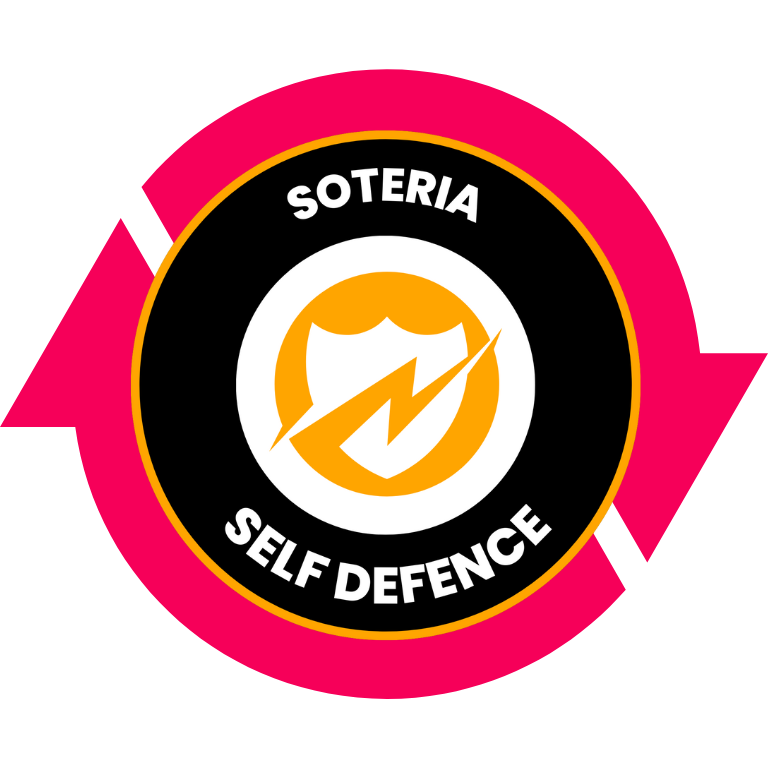
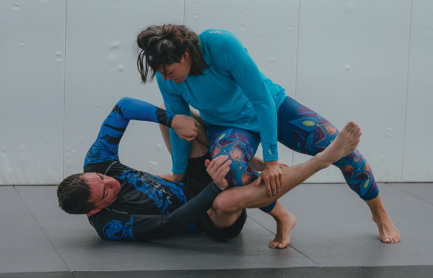

Here at Soteria we do things a little differently to every other self defence we company. Rather than teaching typical self defence martial arts such as Krav Maga or Ikeado that you can learn almost anywhere nowadays, we've inveted our own totally new and unique self-defence system. What do we mean by this? Well first let's explain what we mean by a system. We have designed a set of interconnecting techniques that seemlessly and effortlessly flow from one to another. The end result is a closed loop of manouvers that ensure you are never left in a situation that you are unable to escape from.
The Reason our system is so effective is the principle of dilemmas. This means giving an attacker 2 bad options. Or put simply, if they defend the first move they're making the second move almost embarassingly easy. Having a deep understanding of the actions and reactions involved allows us to teach in a sequential manor. The beauty of this is in removing the burden of thinking fast in a high pressure, high stakes situation. Just follow the system and you'll be fine!
What's truely unique about our system and sets us apart from every other self defence school in the world is that we have designed it from a female perspective. We've done this in two ways. Firstly we identified the most common self defence scenarios that women find themselves in and designed techniques to specifically handle these unfortunately all to common situations. In addition to this we designed each and every technique to directly address common concerns and reservations women may have about self defence. Most of these concerns relate to the idea of not being able to defend oneself and a physically larger antagonist. To address these concerns we created a system based upong creating advantages through leverage back by science and mathematical mechanics and muscular mismatches (the concept of using larger muscle groups such as the hips against and attackers smaller muscle groups such as their biceps).
We are also unique in that our core system is designed solely to de-escalate confrontation. We focus our efforts around removing grips, escaping holds, and getting back to your feet. This 3 skills are essential in self defence as they give you the ability to escape any and every situation you may unfortunately find yourself